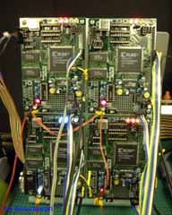

John von Neumannがコンピュータを提唱してから約半世紀が経とうとして いる現在、ようやく脳をモデルとした新しいコンピュータの開発が本格的に 始まった。脳から学んだものを工学的に利用するということは以前から行わ れており、その代表的なものとしてニューラルネットワークの利用が挙げら れる。これはある分野においては利用価値が認められ、実際に我々の周りの 製品にも採り入れられている。しかしこれは脳の神経構造のほんの一部を 利用したに過ぎず、脳のその複雑な振舞い、さらには意識という領域に関し ては依然未知のままである。また脳をモデルとして利用する場合、多くは 現在の汎用コンピュータ上でソフトウェアとして実現される。ソフトウェア で開発する利点はその柔軟性と汎用性にある。しかしその半面、抽象性が 高まってしまう傾向にあるのも事実である。
そこでハードウェアによる実現が考えられる。 つまり脳そのものを工学的に作ってしまおうというのである。 そのものを実現するのであるから抽象性はないといってよいだろう。 さらにハードウェアで実現するということはその実現のための処理速度も 最速のものを利用できることになる。電気を用いたいわゆる電子回路が脳 を実現するのに最も適しているかどうかはわからないが、脳の構造から見 ても現代科学の中で最も有用と思われるのでここでいうハードウェアによ る実現とは電子回路による実現ということとする。一方ハードウェアはソ フトウェアに比べ柔軟性が乏しくなる傾向にある。これはいわゆるソフト ウェアがコンピュータ上で電気を用いてアルゴリズムやデータを記録して 動作するのに対し、ハードウェアはワイヤの結線や部品の組合せという 物理的な接続でアルゴリズムを構築するため変更が困難であるからである。 そこでFPGAが有用となる。
Field Programable Gate Arrayはその名の通りプログラム可能なゲート アレイで、内部に汎用ゲートとメモリを持ち、その結線情報を電気情報で 記述することができるものである。電気情報で記述できるということは ソフトウェアと何ら変わり無く、容易に回路を変更することができ、 ある意味においてはソフトとハードの両者の境界を無くすような存在と 言えるかもしれない。現に開発はパソコン等の上でCADによって設計を行い、 その回路図をコンパイラを通じて直接チップにダウンロードするというもの である。CADの他にもHDLも使用でき、いわばソフトで記述したアルゴリズム がハードに変換されて実現されているとも考えられる。 (広義の意味ではアルゴリズム自体がソフトウェアであると考えられるが。)
さて、脳を作るといっても初めから何でもこなせる万能アルゴリズム 生成アルゴリズムを作れる訳ではないので、まず何で評価するかという アプリケーションを考えなければならない。対象は今までのシーケンシ ャルな処理では処理できないものである。そして脳の処理の中でも比較 的簡単なものである必要がある。これらから運動系の制御が適当である と考えられ、ラジコン模型の自動車やヘリコプターといった容易に実験 ができてかつ、複雑な制御が必要となるものが対象となる。このような 制御では現在の制御対象の状態を知るために外部からの情報を入力する インターフェースが必要となる。このインターフェースは自機と障害物 との空間的相対位置情報、外部から機体に加わる力のベクトル情報、 推進器の出力、機体制御装置の状態、バッテリの残量などの情報を取り 入れることになる。このうちはじめの自機や障害物の空間的な位置情報 を知るためのインターフェースには超音波やレーザー光などを利用して 障害物との距離を出すような方法も考えられるが３次元空間においては 広範囲に渡るスキャンが必要であり、また将来的に物体を識別し、空間 を認識するために利用できること、さらに実際の脳のインターフェース としても目という形で存在することを考えると画像処理を用いるのが適 していると考えられる。無論最終的には他の測定法を併用したマルチモ ーダルなインターフェースも考えられる。
脳型コンピュータで自然空間を認識するためのインターフェースは対象 空間中のシーンを解析し、その結果をある定量的な値として出力する こと、つまり空間中にどのような物体がどのくらいの数、どの位置に 存在するかということを数値化して出力することと、さらにそれらが 時間に応じてどの程度変化したかということを出力する必要がある。 本プロセッサではこのうち時間変化を取り上げ、空間中に存在する 物体の位置の変化からその移動量を出力する処理を行った。これに よりシーン中の物体が全て静止状態にあると仮定できる場合において、 自分の移動方向とその量を知ることができる。また今後他の要素による シーン解析に利用できるように画像処理を用い、エッジ抽出といった 基本的な処理も行っている。
現段階では本プロセッサのめざすところは「運動系の制御を目的とした」 空間認識のためのインターフェースであるが、さらに高次な段階として 自分と他とを区別する自我形成のためのインターフェースが考えられる。 「自我」や「意識」という段階ではその核となる処理に関しては今まで のコンピューターの発想とは異なったものが必要と考えられるが、その インターフェースに関しては現在の工学の延長線の上にあるといえるの で本プロセッサが利用できる可能性は十分考えられる。
視覚情報は工学的には画像信号として実現する。画像を取り込むための デバイスとしてCCDイメージセンサがあり、これは物体に反射した光を 高密度に並んだフォトダイオードで捉え、その強弱も含めた情報を電気 信号に換えるものである。この素子は平面状に規則正しく並んでおり、 端から順に捉えた情報を読みとることで画像が得られる。こうして得ら れた画像は多階調のアナログ信号であるので、これをFPGAで処理する ためにデジタル信号に変換し、さらにこの信号から空間内にある物体の エッジを抽出する。抽出したエッジをさらに線分化し、この線分を １画面毎に比較することでその線分の属している物体の動きを検出できる。
CCDはコンポジットビデオ信号及び各同期信号に変換する回路も含めた
モジュール(SHARP製1/3 inch
のモノクロCCDを使用しているMTV-2510EM)を用いた。CCDカメラはサーボ
モジュールに固定されており、左右に向きを変えられるようになっている。
次にこの信号をビデオアンプ(MOTOROLA
→ 移転先: https://www.nxp.com/ Motorola 半導体部門→Freescale→NXP に買収製 MC14576AP)とA/Dコンバータ
(AnalogDevices
→ 移転先: https://www.analog.com/en/index.html Analog Devices 英語トップ。WebFetch は timeout、ブラウザで表示を確認製 AD876R)で
8bitのデジタル信号に変換し、
XILINX
→ 移転先: https://www.amd.com/ja/products/adaptive-socs-and-fpgas.html Xilinx は 2022 年 AMD に買収。AMD 日本語 FPGA 頁（Xilinx の記載あり）製の
FPGA XC4010E-PQ160-2Cに入力した。
主な回路はこのFPGAで実現したが、FPGAの持つRAMは1画面の画像情報を
保持できるほど大きくないので外部にRAMが必要となった。
FPGA内部ではまず各同期信号を用いて1ライン分の映像信号を取り出し、
これを一旦内部のメモリに保存する。そしてこの信号と次の1ラインの
先頭から順次4画素を１領域として各画素の濃度を比較して４方向のエッジ
を抽出し、これをさらに線分化して１画面分外部のメモリに保存した。
そしてこの線分を次の１画面分の各線分と比較し、そこからカメラの移動
方向とその相対的な移動量を求めた。ただし場面内の物体は全て静止して
いるものとした。
自然空間ではエッジ抽出を行っただけでは物体のテクスチャの模様や 陰影などの影響で物体の輪郭のみを取り出すことが難しく、これを取り 除くためにノイズ除去などの前処理やエッジ抽出の際の閾値の自動調整 等が必要と思われた。また動きの検出では絶対的な移動量を求めるには 検出されたエッジの属している物体までの距離や速度を何らかの方法で 知る必要がある。近くにある物体は移動量が多く、遠くにある物体は 移動量が少ないということを利用して光学的な測定から距離を求める ようなことも考えられるが、２台のCCDカメラによるステレオ立体視や、 他の距離測定装置を併用した方がより正確に適当な情報を得られる可能 性も考えられる。

理研の市川道教らの 脳型コンピュータのアプリケーションである 「運動系の制御」の一つとして、模型ヘリコプタの自動制御が研究 されており、その視覚情報処理のために本プロセッサを用いた例である。